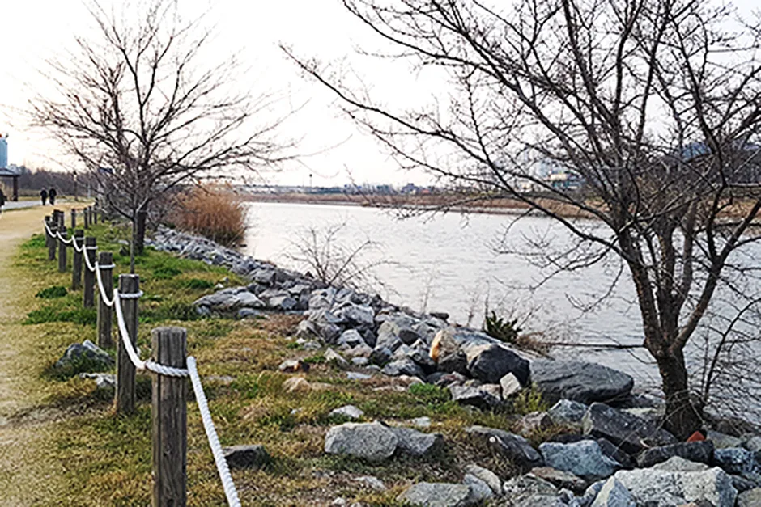
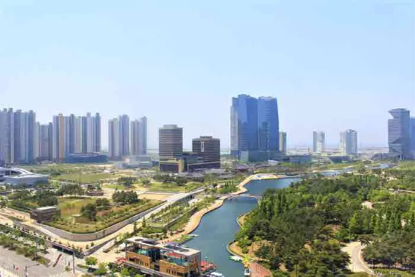
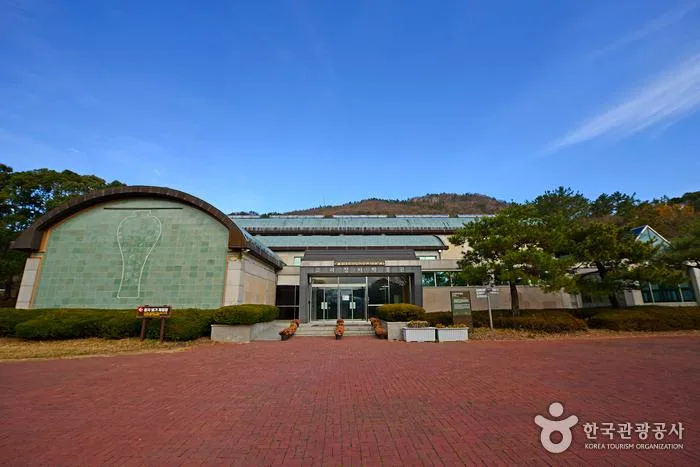
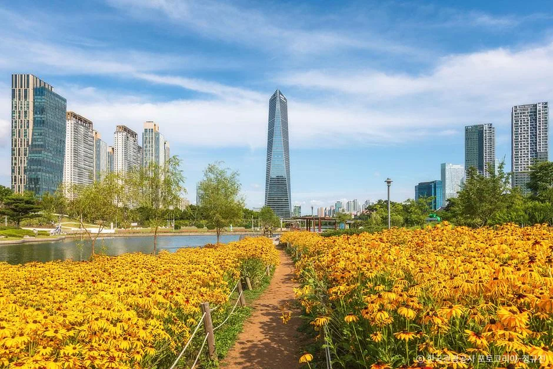
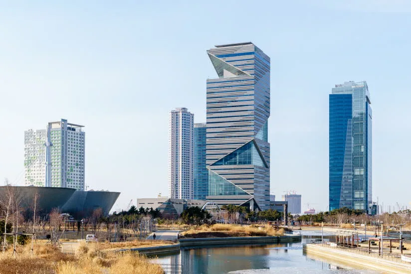
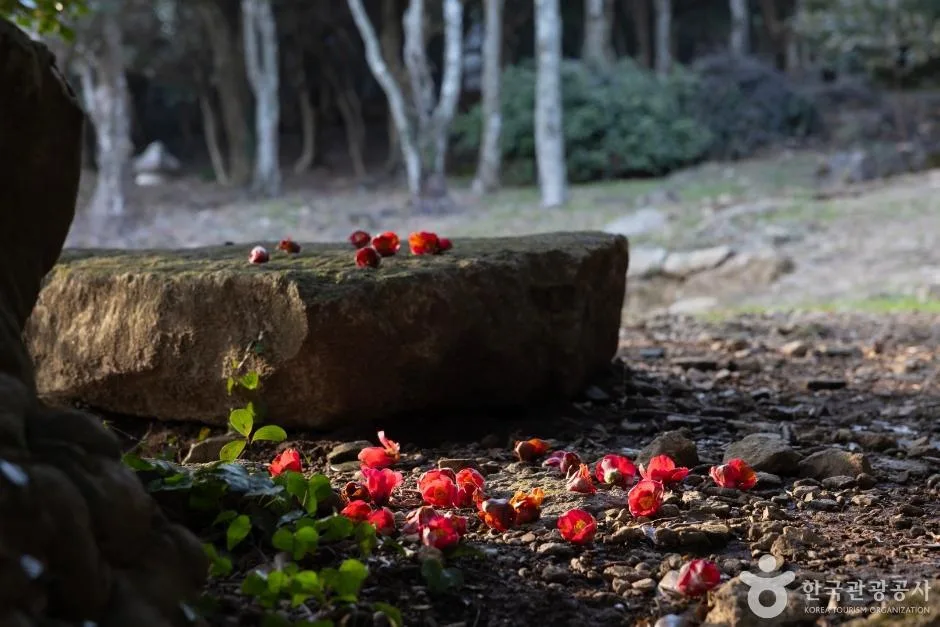

▲ 인천 송도 일대의 밤. 술을 파는 축제는 대부분 야간에 몰려 있다
술을 파는 축제에 차를 가져가는 것은 그 자체로는 문제가 아닙니다. 마시고 운전하지 않으면 됩니다.
실제 문제는 그다음입니다. 대리운전을 부르면 되지만 지방 축제장에서는 배차가 잡히지 않는 일이 흔하고, 차를 두고 대중교통으로 귀가하면 그 차가 하룻밤을 어디서 보내느냐가 남습니다. 야간에 폐쇄되는 주차장이라면 다음 날 아침에 차를 못 뺄 수도 있습니다.
1. 축제장에는 전용 주차장이 없다
대형 축제일수록 전용 주차장이 없습니다. 축제장 자체가 공원이나 운동장을 빌려 쓰는 구조라, 주차 수요는 인근 공영주차장과 임시 주차장으로 흩어집니다.

▲ 인천 송도 달빛축제공원. 올여름 맥주축제가 열린 장소다 ⓒ 대한민국 구석구석(한국관광공사)
올여름 사례가 그랬습니다. 8월 22일부터 30일까지 열린 2026 송도맥주축제는 달빛축제공원에서 진행됐는데 축제 전용 주차장을 따로 운영하지 않았습니다. 대신 센트럴파크 공영주차장과 인근 임시 주차장으로 분산했고, 15분 간격 셔틀버스를 함께 돌렸습니다.

▲ 센트럴파크 일대. 축제 기간에는 이 주변 공영주차장이 수요를 받는다 ⓒ 대한민국 구석구석(한국관광공사)
수도권 근교 시설도 예외가 아닙니다. 용인 한국민속촌은 파전·막걸리 축제를 9월 6일까지 운영하면서 야간 개장을 자정까지 연장했습니다. 술을 파는 프로그램과 심야 폐장이 겹치면, 주차장에서 나가는 시각이 곧 대리 수요가 몰리는 시각이 됩니다.
지방은 구조가 또 다릅니다. 8월 27~29일 열린 강진 하맥축제는 강진종합운동장을 축제장으로 썼습니다. 운동장 부지는 주차 공간이 넉넉해 보이지만, 저녁 5시부터 9시까지 인파가 한꺼번에 몰리고 한꺼번에 빠지는 구조라 출차 정체가 집중됩니다.

▲ 전남 강진. 지방 축제는 대중교통 대안이 도시보다 훨씬 적다 ⓒ 대한민국 구석구석(한국관광공사)
2. 차를 두고 가면 그날 밤부터
차를 두고 가는 것은 옳은 선택입니다. 다만 두고 가는 장소를 아무 데나 잡으면 안 됩니다.
첫째, 야간 폐쇄 여부입니다. 공영주차장 중에는 특정 시각에 게이트를 닫는 곳이 있습니다. 축제가 밤 10시에 끝나는데 주차장이 밤 11시에 닫힌다면, 그 안에 차를 빼지 못한 경우 다음 날 개장 시각까지 손을 쓸 수 없습니다.

▲ 축제 임시 주차장은 대체로 이런 공터에 임시 개설된다 ⓒ 대한민국 구석구석(한국관광공사)
둘째, 임시 주차장은 축제와 함께 사라집니다. 축제 기간에만 개설된 임시 주차장은 행사가 끝나면 폐쇄되거나 원래 용도로 돌아갑니다. 마지막 날 밤에 차를 두고 갔다면 다음 날 그 자리가 어떤 상태일지 확인이 필요합니다.
셋째, 초과 주차료와 견인입니다. 무료로 안내된 주차장이라도 무료 시간이 정해져 있는 경우가 있고, 밤새 세워두면 초과분이 붙습니다. 주차 금지 구역에 세웠다면 견인 대상이 되고, 견인료와 보관료는 전부 차주 부담입니다.
3. 다음 날 아침이 더 위험하다
가장 많이 일어나는 사고는 축제 당일 밤이 아니라 다음 날 아침입니다. 밤새 잤으니 괜찮다고 판단하고 차를 가지러 가서 그대로 운전대를 잡는 경우입니다.
알코올 분해 속도는 생각보다 느립니다. 체중과 체질에 따라 다르지만 시간당 분해량은 제한돼 있고, 늦게까지 많이 마셨다면 아침에도 혈중알코올농도가 단속 기준 위에 남아 있을 수 있습니다. 도로교통법상 0.03% 이상이면 면허정지, 0.08% 이상이면 면허취소 대상입니다.

▲ 숙취운전 단속은 출근 시간대에도 이뤄진다 ⓒ 대한민국 구석구석(한국관광공사)
"잠을 잤다"는 사실은 면책 사유가 아닙니다. 단속은 수면 시간이 아니라 측정값으로 판단합니다. 축제 다음 날 아침에 차를 회수해야 한다면, 운전 대신 동승자나 대중교통으로 접근하는 편이 안전합니다.
📍 차를 회수하는 세 가지 방법
① 대리운전 — 축제 당일 밤에 부르는 것이 원칙이지만 지방은 배차가 어렵습니다.
② 다음 날 오후 회수 — 아침이 아니라 충분히 시간이 지난 뒤 가는 방식입니다.
③ 동승자 운전 — 일행 중 술을 마시지 않은 사람을 미리 정해두는 방식입니다. 이 경우 그 사람이 보험상 운전 가능 범위에 들어가는지 먼저 확인해야 합니다.
4. 대리운전이 안 잡히는 구간
대리운전은 수요와 공급이 만나는 곳에서만 작동합니다. 도심 번화가는 기사가 많지만, 지방 축제장은 사정이 다릅니다. 기사가 그곳까지 이동해 오는 비용을 감당해야 하고, 손님을 내려준 뒤 돌아갈 방법도 마땅치 않기 때문입니다.

▲ 지방 축제장은 심야에 대중교통과 대리 배차가 함께 끊긴다 ⓒ 대한민국 구석구석(한국관광공사)
결과적으로 호출이 안 되거나, 되더라도 요금이 크게 붙습니다. 축제가 끝나는 시각에 수백 명이 동시에 호출을 넣으면 그마저도 경쟁이 됩니다. "가면 부르면 되겠지"라는 계획은 지방 축제에서 가장 잘 깨지는 계획입니다.
셔틀버스가 있다면 그쪽이 확실합니다. 송도맥주축제처럼 15분 간격 셔틀을 운행하는 축제라면, 애초에 차를 셔틀 출발지 근처에 두고 왕복하는 구성이 가장 안전합니다.
5. 출발 전에 정해두면 되는 것
결정 순서를 바꾸면 대부분 해결됩니다. "축제에 어떻게 갈까"가 아니라 "끝나고 차를 어떻게 할까"를 먼저 정하는 것입니다.
| 항목 | 확인할 것 |
|---|---|
| 주차장 운영시간 | 야간 폐쇄 여부와 개장 시각 |
| 임시 주차장 | 축제 종료 후 존치 여부 |
| 무료 시간 | 초과 시 요금 부과 기준 |
| 셔틀버스 | 운행 간격과 막차 시각 |
| 대리 배차 | 해당 지역 심야 호출 가능 여부 |
| 회수 계획 | 언제·누가·어떻게 차를 가지러 갈지 |
가장 단순한 해법은 차를 두고 가지 않는 것입니다. 술을 마실 사람이 정해져 있다면 애초에 대중교통으로 접근하는 편이 계산이 없습니다. 송도맥주축제의 경우 인천 1호선 송도달빛축제공원역에서 도보 5분 거리였습니다.
정리하면 이렇습니다. 축제장에서 술을 마시기로 했다면, 그 순간부터 계획해야 하는 것은 내 귀가가 아니라 차의 하룻밤입니다. 주차장이 몇 시에 닫히는지, 다음 날 몇 시에 열리는지, 그리고 누가 그 차를 몰고 나올 것인지. 세 가지를 정해두면 됩니다.